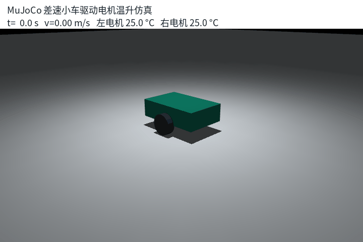
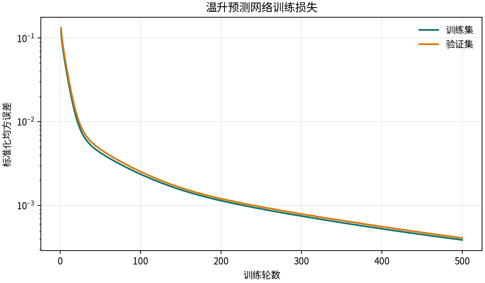
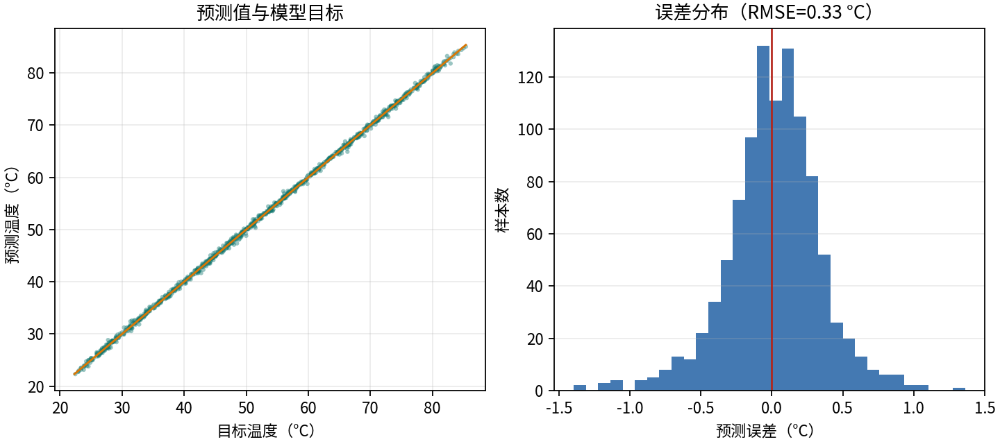
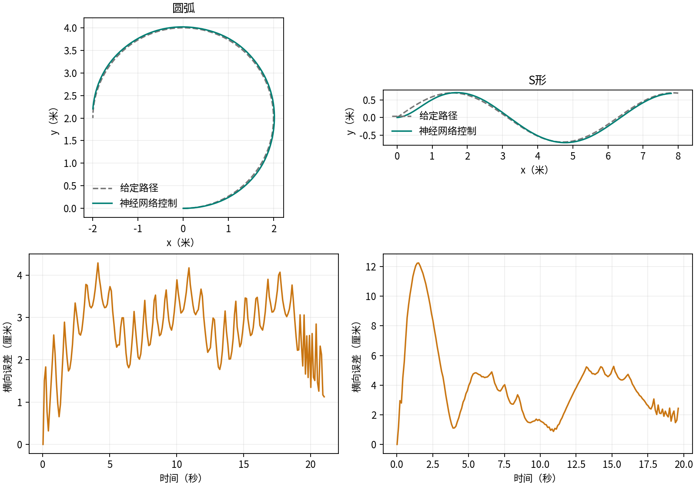

MuJoCo 差速小车驱动电机温升预测与降额控制¶
Word 格式：下载报告
研究目标¶
本实验在 MuJoCo 差速小车上建立左右轮驱动电机的集总温升模型，利用电流、绕组温度、车速和环境温度预测 5 秒后的电机温度，再将预测结果用于速度降额。重点观察直行、转弯和高环境温度下的电机热变化，以及降额带来的速度变化。
选取传感器感知与给定轨迹控制任务：带噪声的温度、电流和车速观测用于温升预测，航向神经网络直接输出角速度指令，完成圆弧和 S 形路径跟踪。两路网络分别完成热状态预测与运动控制。
仿真模型包含底盘、左右轮、地面接触和电机驱动关节。温度、电流和车体状态由每个仿真时间步记录。固定随机种子控制测量噪声，保证场景可重复。


数学模型¶
电机电流根据驱动转矩估算：
绕组温度采用集总热容模型。车速增大时增强表面对流散热：
其中 \(C_{th}\) 为等效热容，\(R_w\) 为绕组电阻，\(h_0\) 为静止散热系数，\(h_v\) 为速度相关散热系数，\(T_a\) 为环境温度。离散仿真使用显式欧拉更新：
在预测时域内假设电流、车速与环境温度保持不变，解析温度为：
神经网络预测¶
预测器为 4-24-1 多层感知机 (MLP)，输入依次为绕组温度、电流、车速和环境温度。输入按训练集均值和标准差归一化，隐藏层使用 ReLU，输出未来 5 秒温度；训练目标为上式解析温度。损失函数为：
固定种子 7 生成 4,096 条开发样本，随机划分 3,276 条训练样本和 820 条验证样本，训练 500 轮。种子 8 的 1,024 条独立测试样本 RMSE 为 0.329 °C。模型参数保存为 JSON，训练记录、训练曲线和独立误差分布均保存在仓库内。


控制策略¶
ROS 2 节点读取 /cmd_vel，将最近一次电机温度、电流和车速送入预测器。当未来温度达到 35 °C 时进入降额状态，目标温度低于 33 °C 后解除降额。速度缩放比例为：
温度上限和复位温度分离形成迟滞区间，减少阈值附近反复切换。节点发布左右电机温度、未来温度估计、速度缩放比例及限幅后的速度指令。
给定路径的神经网络控制¶
以距离当前位置最近的参考路径点为进度，向前选取 12 个离散点作为前视目标。航向误差为目标方向与当前航向之差，并归一化到 \([-\pi,\pi]\)。网络输入为：
网络使用 4-24-1 结构，控制输出是角速度。训练目标为 \(\operatorname{clip}(2.5\sin(e_\psi),-1.8,1.8)\)，通过监督学习拟合航向反馈律。种子 21 的 4,096 条开发样本划分为 3,276 条训练与 820 条验证；种子 22 的 1,024 条独立测试样本角速度 RMSE 为 0.0748 rad/s。速度由剩余距离和航向对准程度限制，再对线速度和神经网络输出角速度共同乘以热降额比例。
路径横向误差取车体中心到离散参考路径的最小距离，RMSE 定义为：
| 路径 | 运行时间（秒） | 横向 RMSE（厘米） | 最大误差（厘米） | 最终目标距离（厘米） | 到达 |
|---|---|---|---|---|---|
| 圆弧 | 21.07 | 2.85 | 4.29 | 19.89 | 是 |
| S形 | 19.64 | 4.80 | 12.25 | 19.92 | 是 |
终点判定为参考路径进度超过 90% 且距终点小于 20 cm。记录间隔为 0.1 秒，原始轨迹和汇总结果随曲线保存。

算法流程与核心源码¶
每次控制循环按以下顺序执行：
- MuJoCo 更新轮关节和车体状态；温度、电流、速度经传感器噪声模型形成观测。
- 温升网络预测 5 秒后温度；迟滞控制器决定当前降额比例。
- 根据位姿寻找参考路径进度与前视点，生成航向误差的正弦/余弦特征。
- 航向网络预测角速度，与距离反馈得到的线速度共同执行降额。
- 差速运动学将速度转为左右轮转速目标，关节速度误差产生限幅转矩，再推进物理仿真并记录数据。
DifferentialDriveSimulation.step() 根据轮距 0.32 m、轮半径 0.07 m 完成差速解算，通过 mj_step 计算接触动力学；转矩上限为 2.5 N·m。MotorSensorModel.sample() 对物理状态施加固定种子的测量噪声。TemperaturePredictor.fit() 只用训练子集计算标准化参数，并以小批量梯度下降更新两层权重；predict() 在推理时复用这些参数。follow_path() 持续读取观测、计算前视误差并调用网络输出角速度，达到终点后停止；未完成路径时主程序以非零状态退出。
仿真步骤¶
Ubuntu 22.04 与 ROS 2 Humble¶
在仓库根目录安装依赖并构建：
sudo apt update
sudo apt install -y python3-pip
python3 -m pip install "numpy<2" "mujoco>=3.2,<4" matplotlib pillow
colcon build --merge-install --packages-select mujoco_motor_thermal_control
source install/setup.bash
运行 MuJoCo 仿真¶
python3 src/ground/mujoco_motor_thermal_control/main.py \
--steps 30000 --linear 0.75 --angular 0.4 --ambient 25 \
--csv output/motor_run.csv
程序运行 300 秒并在结束时输出小车位姿、速度和左右电机温度。时序 CSV 记录温度、电流、转矩、速度、平面位姿和航向角。
启动 ROS 2 热控制节点¶
ros2 launch mujoco_motor_thermal_control main.launch.py \
linear_limit_c:=35.0 release_c:=33.0 ambient_c:=25.0
另一个终端发布速度指令并检查输出：
ros2 topic pub /cmd_vel geometry_msgs/msg/Twist \
"{linear: {x: 0.8}, angular: {z: 0.35}}" -r 20
ros2 topic echo /motor_thermal/left_temperature
ros2 topic echo /motor_thermal/predicted_temperature
ros2 topic echo /motor_thermal/speed_scale
ros2 topic echo /motor_thermal/cmd_vel
多场景性能评价¶
python3 -m evaluate_scenarios --steps 18000 \
--model src/ground/mujoco_motor_thermal_control/models/temperature_mlp.json \
--output docs/img/ground/motor_thermal_control/evaluation
python3 -m mujoco_motor_thermal_control.plot_evaluation \
--summary docs/img/ground/motor_thermal_control/evaluation/scenario_summary.csv \
--curves docs/img/ground/motor_thermal_control/evaluation/scenario_curves.csv \
--output docs/img/ground/motor_thermal_control/evaluation/evaluation_curves.png
每种工况各运行 180 秒，并分别比较固定速度与预测降额。评价项包括最高电机温度、平均速度、行驶距离和降额时间占比。
给定路径训练、测试与 launch¶
python3 src/ground/mujoco_motor_thermal_control/main_trajectory.py --train \
--output docs/img/ground/motor_thermal_control/trajectory
colcon build --merge-install --packages-select mujoco_motor_thermal_control
source install/setup.bash
ros2 launch mujoco_motor_thermal_control trajectory.launch.py
launch 默认读取随包安装的 steering_mlp.json 和 temperature_mlp.json，在 /tmp/motor_thermal_trajectory 写入轨迹、汇总 CSV、JSON 与性能图。训练开关只用于重新训练，日常 launch 直接加载模型。
性能结果¶
| 工况 | 策略 | 最高电机温度（°C） | 平均速度（m/s） | 行驶距离（m） | 降额时间（%） |
|---|---|---|---|---|---|
| 常温直行 | 固定速度 | 32.072 | 0.744 | 133.976 | 0.00 |
| 常温直行 | 预测降额 | 32.053 | 0.743 | 133.825 | 2.43 |
| 常温转弯 | 固定速度 | 43.396 | 0.752 | 135.319 | 0.00 |
| 常温转弯 | 预测降额 | 41.787 | 0.619 | 111.439 | 77.71 |
| 高温转弯 | 固定速度 | 45.742 | 0.706 | 127.026 | 0.00 |
| 高温转弯 | 预测降额 | 42.472 | 0.563 | 101.387 | 80.06 |
转弯时，预测降额在速度降低的同时降低最高电机温度；高温转弯工况下降低 3.270 °C，平均速度下降 0.143 m/s。常温直行温度低于控制阈值，速度基本保持不变。逐时数据与汇总表分别保存在 scenario_curves.csv 和 scenario_summary.csv。

源码结构¶
| 文件 | 内容 |
|---|---|
src/ground/mujoco_motor_thermal_control/main.py |
MuJoCo 主入口与 CSV 记录接口 |
mujoco_motor_thermal_control/thermal.py |
集总热模型与欧拉离散更新 |
mujoco_motor_thermal_control/simulation.py |
MuJoCo 差速车、驱动关节与仿真步进 |
mujoco_motor_thermal_control/sensors.py |
温度与电流观测噪声模型 |
mujoco_motor_thermal_control/dataset.py |
温升训练样本与解析目标生成 |
mujoco_motor_thermal_control/predictor.py |
MLP 训练、预测及 JSON 保存/加载 |
mujoco_motor_thermal_control/controller.py |
迟滞温控和速度降额比例 |
mujoco_motor_thermal_control/motor_thermal_node.py |
ROS 2 温度监测和控制话题节点 |
launch/main.launch.py |
ROS 2 启动入口 |
evaluate_scenarios.py |
多场景性能评价与 CSV 导出 |
render_demo.py |
MuJoCo 真实场景截图和 GIF 录制 |
Docker 环境¶
Ubuntu 20.04 / ROS Noetic¶
在仓库根目录构建并运行：
docker build -t sirius185/motor-thermal:noetic \
-f src/ground/mujoco_motor_thermal_control/Dockerfile.noetic .
docker run --rm sirius185/motor-thermal:noetic
镜像默认通过 roslaunch 启动 main_noetic.launch 和 main_noetic.py。Noetic 接口与 Humble 使用同名的 /cmd_vel、温度、预测温度、缩放比例和控制指令话题。Ubuntu 20.04.6、Python 3.8.10、MuJoCo 2.3.7、NumPy 1.24.4 环境中，10 项测试通过；实际收到温度消息，输入 0.5 m/s、0.2 rad/s 后收到非零速度输出。
Ubuntu 22.04 / ROS 2 Humble¶
从仓库根目录构建 Humble 容器并运行测试：
docker build -t mujoco-motor-thermal:humble \
-f src/ground/mujoco_motor_thermal_control/Dockerfile .
docker run --rm mujoco-motor-thermal:humble bash -lc \
"source /opt/ros/humble/setup.bash && source install/setup.bash && \
colcon test --merge-install --return-code-on-test-failure --packages-select mujoco_motor_thermal_control && \
colcon test-result --verbose"
Ubuntu 22.04 + ROS 2 Humble 容器用于构建、单元测试和 launch 验证；ROS 2 节点发布温度、预测值、速度缩放和速度指令话题。轨迹回归测试同时验证两条路径到达、误差上限和速度缩放范围。
Humble 共 10 项测试通过，温度话题收到 25.068 °C 的实测消息。四个前序阶段分别通过 3、4、6、7 项测试，独立 launch 均成功启动。模型版本与系统版本分开固定：Noetic 使用支持 Python 3.8 的 MuJoCo 2.3.7，Humble 使用 MuJoCo 3.17。